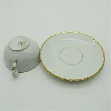
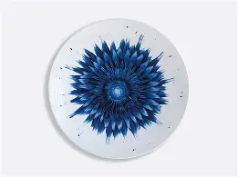
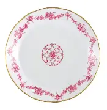
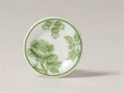
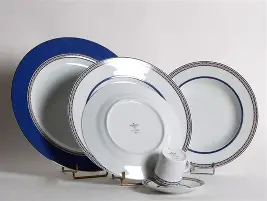
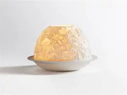
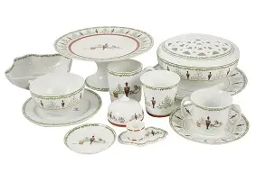
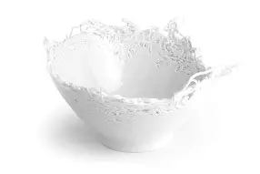

Tasse en porcelaine
Provenance : Limoges, début XXᵉ siècle
Tasse et soucoupe en porcelaine avec dorure. L'ensemble a été vendu dans Limoges durant toute la première moitiée du XXᵉ siècle.

Assiette fleur
Provenance : Limoges, début XIXᵉ siècle
Assiette tirée de l'imagination d'un artiste local et commandée pour son propre usage personnel.

Assiette liserait rose
Provenance : Limoges, 2001
Assiette créée pour un riche négociant asiatique. Suite à son décès en 2015, le service a été complètement légué au musée.

Assiette décorative
Provenance : Limoges, XXᵉ siècle
Assiette fabriquée en édition limitée, suite au projet de la manufacture Bernardaud, "ART de la table", consistant à faire des objets de la table, des oeuvres d'art.

Servide de table marin
Provenance : Limoges, 2020
Service de table créé sur le thème de la navigation, cette gamme a été produite jusqu'en 2020.

Bougeoir en porcelaine et ivoire
Provenance : Limoges, XVIIᵉ siècle
Bougeoire fait avec de la porcelaine et de l'ivoir pour un armateur espagnol. La date de création est incertaine.

Service Marie-Antoinette
Provenance : Limoges, 1793
Service de table crée en l'honneur de Marie-Antoinette, lors de sa venue à Limoges en 1793, avec son épous Louis XVI, quelques mois avant sa mort.

Saladier
Provenance : Limoges, 2025
Tout premier saladier français en porcelaine découpé au lazer.